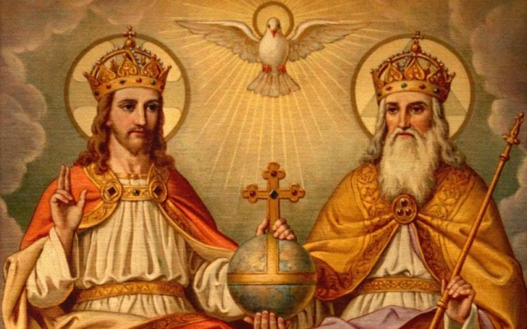
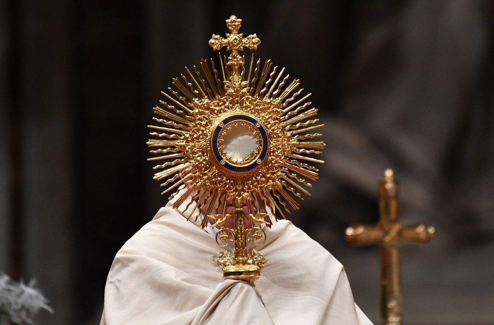

O que é a Igreja Católica?
E a maior igreja cristã do mundo, que em 2020 tinha aproximadamente 1,36 bilhão de seguidores batizados. Como a maior e mais antiga instituição internacional do mundo em funcionamento contínuo, ela desempenhou um papel proeminente na história e no desenvolvimento da civilização ocidental. A Igreja é chefiada pelo bispo de Roma, conhecido como Papa. Sua administração central é a Santa Sé. As crenças cristãs do catolicismo são baseadas no Credo Niceno. A Igreja Católica ensina que é a Igreja única, santa, católica e apostólica fundada por Jesus Cristo em sua Grande Comissão, que seus bispos são os sucessores dos apóstolos de Cristo e que o papa é o sucessor de São Pedro, a quem o primado foi conferido por Jesus. Ela afirma que pratica a fé cristã original, reservando a infalibilidade, transmitida pela tradição sagrada. A Igreja Latina, as vinte e três igrejas católicas orientais e institutos, como ordens mendicantes, ordens monásticas fechadas e terceiras ordens, refletem uma variedade de ênfases teológicas e espirituais na Igreja.
A Virgem Maria é socorro dos cristãos. Ela comungou das dores e angústias de Jesus e, mais do que ninguém, conheceu o sofrimento supremo de Cristo que remiu a humanidade. Por isso, Maria socorre os aflitos e desesperados levando-lhes esperança e amor. A Bula Ineffabilis, de Pio IX, diz que à Virgem foi concedido ser junto ao Filho unigênito a medianeira e advogada de todo o mundo. Com isso, entendemos que, Nossa Senhora auxilia, socorre e intercede por todos, num gesto de amor de mãe, que não deseja que nenhum de seus filhos se perca, mas que encontrem a salvação.
A palavra vocação vem do latim: Vocatio-onis, cujo significado é chamada, convite. É a chamada de Deus para abraçar uma missão, uma forma de apostolado; é também uma inclinação natural para assumir uma missão no mundo. Celebramos as vocações: sacerdotal, matrimonial, religiosa e leiga.
O mistério da Santíssima Trindade é o mistério central da fé e da vida cristã. Deus se revelou como Pai, Filho e Espírito Santo. Foi Nosso Senhor Jesus Cristo quem nos revelou este mistério. Ele falou do Pai, do Espírito Santo e dEle mesmo como Deus. Logo, não é uma verdade inventada pela Igreja, mas revelada por Jesus. Não a podemos compreender, porque o Mistério de Deus não cabe em nossa cabeça, mas é a verdade revelada. Santo Agostinho dizia: O Espírito Santo procede do Pai enquanto fonte primeira e, pela doação eterna deste último ao Filho, do Pai e do Filho em comunhão. Só existe um Deus, mas n’Ele há três Pessoas divinas distintas: Pai, Filho e Espírito Santo. Não pode haver mais que um Deus, pois este é absoluto. Se houvesse dois deuses, um deles seria menor que o outro, e Deus não pode ser menor que outro, pois não seria Deus.
A Profissão de Fé do Papa Dâmaso diz: Deus é único, mas não solitário (Fides Damasi, DS 71). Pai, Filho, Espírito Santo não são simplesmente nomes que designam modalidades do ser divino, pois são realmente distintos entre si: “Aquele que é Pai não é o Filho, e aquele que é o Filho não é o Pai, nem o Espírito Santo é aquele que é o Pai ou o Filho” (XI Conc. Toledo, em 675, DS 530). São distintos entre si por suas relações de origem: É o Pai que gera, o Filho que é gerado, o Espírito Santo que procede (IV Conc. Latrão, e, 1215, DS 804).
O Santíssimo Sacramento é, pois, o bom Deus; é Jesus Cristo que está aqui, corporalmente presente em meio aos cristãos. Como outrora em Belém, em Nazaré, em Jerusalém, o Filho eterno de Deus, estava por sua humanidade, realmente presente no meio dos homens; assim, pelo Santíssimo Sacramento, Ele continua a habitar realmente no meio de nós. Não o vemos, mas Ele está igualmente presente, como um homem está realmente presente numa habitação, mesmo estando escondido atrás de uma cortina. O véu que na Eucaristia, nos oculta Jesus Cristo são as espécies sacramentais, isto é, as aparências do pão e do vinho. Em Jerusalém, o véu que ocultava aos judeus a divindade do Salvador era a sua humanidade. Os judeus deviam crer na divindade, que eles não viam, e que, no entanto, estava realmente presente: nós devemos crer igualmente naquilo que não vemos, isto é, na divindade e na humanidade de Jesus Cristo, ambas presentes sob o véu da Hóstia consagrada.
